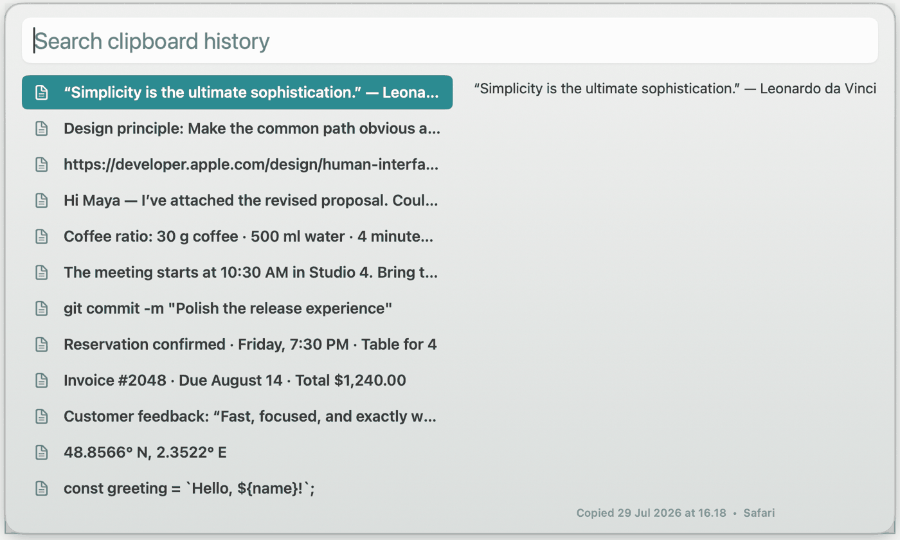

Paste Again
Searchable clipboard history, one keystroke away. Hit the shortcut, type a few letters, press Enter — the text lands back where you were working.
- Fuzzy search across everything you copied
- Pastes straight into the app you came from
- Stored locally — no sync, no analytics
